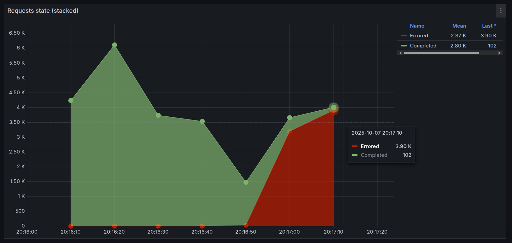
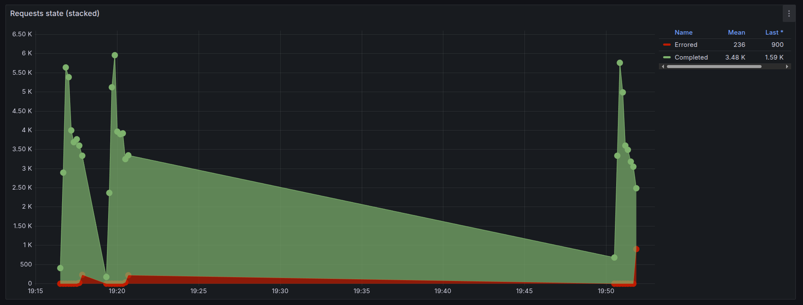

Índice
- 1. Introducción
- 2. Atributos de calidad (QA) identificados
- 3. Arquitectura base
- 4. Metodología de pruebas
- 5. Resultados – Caso base
- 6. Propuestas de mejora
- 7. Trade-offs detectados.
- 8. Pedido Adicional (Volumen de transacciones por moneda)
- 9. Conclusiones
1. Introducción
1.1. Contexto (startup arVault).
1.2. Objetivos del TP.
1.3. Alcance del análisis.
2. Atributos de calidad (QA) identificados
2.1. Disponibilidad
Al ser un servicio de exchange de monedas, asumimos que es un servicio que se utiliza durante todos los dias habiles de la semana en horario cambiario. Por lo tanto, es importante que el servicio se encuentre disponible durante esos horarios para no perder clientes.
Además, dado el contexto en el que queremos recuperar la confianza de los usuarios y remontar la reputación, el sistema debe ser altamente accesible para los usuarios y permitir realizar correctamente sus operaciones respetando tiempos razonables de respuesta.
2.2. Escalabilidad (Elasticidad)
La escalabilidad, y en particular la elasticidad, constituyen un atributo de calidad crítico para el servicio de intercambios de arVault. Esto se debe a que la infraestructura del sistema debe ser capaz de adaptarse dinámicamente a variaciones en la demanda de usuarios.
En el contexto del negocio, es esperable la aparición de picos significativos de demanda en momentos específicos (por ejemplo, en la apertura y cierre del horario cambiario), así como también períodos de baja o nula actividad. A ello se suma que, dado que el servicio busca captar rápidamente un gran volumen de nuevos usuarios, especialmente tras campañas de promoción destinadas a revertir percepciones negativas de experiencias pasadas, existe el riesgo de enfrentar aumentos inesperados de tráfico.
Si el sistema careciera de elasticidad, estos picos de operaciones de cambio de moneda podrían derivar en saturación de recursos, lo que a su vez ocasionaría demoras, rechazos de transacciones o caídas del servicio. Dichos incidentes afectarían de manera directa la reputación de la empresa, un aspecto considerado prioritario en función de los objetivos actuales y de las expectativas de los stakeholders.
2.3. Performance
El atributo de calidad Performance, y en particular el User-Perceived Performance, adquiere relevancia crítica en el servicio de intercambio de monedas de arVault, para sustentar esta afirmación nos basamos en el siguiente análisis del contexto y antecedentes brindados:
Tras el lanzamiento de la funcionalidad, se registraron reclamos de usuarios relacionados con demoras y fallas en la ejecución de operaciones de cambio, lo que ha derivado en reseñas negativas y pérdida de confianza en la plataforma. En un contexto donde la empresa necesita con urgencia atraer nuevas rondas de inversión, estas deficiencias de rendimiento representan un riesgo directo, ya que los potenciales inversores han condicionado su apoyo a la realización de mejoras en la calidad del servicio.
En una aplicación financiera, la percepción de agilidad y confiabilidad en la respuesta del sistema es esencial: tiempos de espera excesivos o transacciones fallidas afectan la experiencia de los usuarios y minan la credibilidad de la plataforma. Aunque el diferencial de arVault reside en ofrecer tasas de cambio más convenientes que la competencia, dicho valor se ve neutralizado si el servicio de intercambio no responde con la rapidez y estabilidad que los clientes esperan.
Por ello, la mejora del User-Perceived Performance se presenta como un paso imprescindible no solo para recuperar la confianza de los usuarios actuales, sino también para restaurar la reputación de la empresa ante el mercado y viabilizar la captación de nuevos inversores, garantizando así la continuidad y evolución del negocio.
2.4. Visibilidad
El valor de este atributo de calidad es más indirecto pero estratégico pues permite entender el comportamiento real del sistema, identificar cuellos de botella de performance, localizar errores en operaciones de cambio y detectar patrones de saturación que anticipen problemas de disponibilidad o escalabilidad. Es decir, la visibilidad no impacta de forma inmediata en la experiencia del usuario, pero habilita a los arquitectos y al equipo técnico a diagnosticar, mejorar y sostener los otros atributos de calidad prioritarios.
2.5. Seguridad
Es fundamental que el sistema sea seguro para evitar posibles ataques que puedan comprometer la integridad del sistema, la privacidad de los datos de los clientes o perdida/robo de dinero. Incluso pensando que debemos tambien tener en cuenta marcos regulatorios sobre el manejo de datos personales y financieros. Tambien entendemos del enunciado que es importante la reputacion del sistema, y esto podria verse muy dañado en caso de que haya una brecha de seguridad.
3. Arquitectura base
3.1. Análisis de la influencia de decisiones de diseño en los QA's
3.1.1. Disponibilidad
- Puntos únicos de falla (únicas instancias de servicios) y su impacto
Analizando las decisiones de diseño tomadas por el desarollador, particularmente con un análisis de la infraestructura y diseño del despliegue del sistema, nos percatamos que los puntos que se mencionan a continuación impactan negativamente en la Disponibilidad del sistema pues modelan una arquitectura con alta dependencia de componentes individuales, sin mecanismos de redundancia, con múltiples puntos únicos de falla y carente de mecanismos de recuperación automática, lo cual implica que la falla de un solo servicio (API, Nginx, almacenamiento local) ocasionaría la indisponibilidad total del sistema.
Backend (API)
Se despliega una única instancia del servicio de API (según la configuración en docker-compose). De esta forma, la ausencia de réplicas y de un mecanismo efectivo de balanceo de carga (porque no hay múltiples nodos entre los cuales se balancee la carga) la caída de dicha instancia del backend causaría que el sistema completo deje de responder a solicitudes.
Nginx (reverse proxy)
Para este servicio también existe una sola instancia configurada como punto de entrada y aunque se define un bloque `upstream`, este solo redirige a una única API backend.
Por esto la arquitectura termina teniendo dos puntos críticos: tanto el proxy (nginx) como el backend, la indisponibilidad de cualquiera de ellos impacta directamente en la experiencia del usuario final.
Persistencia de datos
Actualmente la aplicación utiliza archivos JSON locales para la persistencia, este enfoque presenta múltiples limitaciones: falta de replicación, ausencia de mecanismos de recuperación ante fallas, y dependencia del almacenamiento local del contenedor/host. Una pérdida de datos o la caída del servicio implican tiempos de recuperación prolongados, degradando así directamente la disponibilidad.
- Arquitectura monolítica y su impacto
Al analizar la estructura lógica del sistema, se observa que este responde a un patrón monolítico, en el cual toda la lógica de negocio, el manejo de estado y la persistencia de datos se concentran en un solo bloque sin separación clara de responsabilidades ni interfaces desacopladas. Este diseño acarrea consecuencias directas sobre la Disponibilidad, entre las que se destacan:
- Arquitectura unificada Toda la lógica de negocio (gestión de cuentas, tasas, transacciones) se encuentra contenida en un único módulo. La caída de cualquier componente interno afecta al sistema en su totalidad, ya que no existen mecanismos de aislamiento de fallos ni tolerancia a errores.
- Alto acoplamiento entre módulos Los componentes del sistema tienen dependencias directas y requieren inicializaciones en un orden específico. Esto implica que la indisponibilidad de un módulo interno impide el correcto funcionamiento del resto, amplificando los riesgos de interrupción total.
- Escalabilidad y resiliencia limitadas Al no existir modularidad ni servicios independientes, no es posible escalar ni recuperar selectivamente partes del sistema. Cualquier estrategia de replicación debe aplicarse al monolito completo, lo cual incrementa la complejidad operativa y reduce la capacidad de respuesta frente a fallos.
En síntesis, la naturaleza monolítica del sistema no solo explica la existencia de múltiples puntos únicos de falla en la infraestructura actual, sino que también agrava su impacto: ante un error en un módulo o en la persistencia de datos, la indisponibilidad afecta a toda la aplicación. Esto limita severamente la capacidad de mantener una operación continua y dificulta la incorporación de mecanismos de alta disponibilidad o recuperación automática.
- Carencia de uso de transacciones y su impacto
Otro aspecto crítico identificado es la ausencia de un sistema de transacciones confiables para el manejo de operaciones financieras (por ejemplo, conversiones entre diferentes monedas). Actualmente, la persistencia de datos se basa en archivos JSON locales, sin soporte nativo para propiedades ACID.
Esta limitación introduce riesgos importantes que afectan directamente el atributo de calidad Disponibilidad, principalmente se tiene un gran riesgo de inconsistencias de datos e incremento del tiempo de recuperación, pues, al no existir mecanismos transaccionales, fallas en medio de una operación (ej. caída del proceso, error de escritura en disco) pueden dejar el sistema en un estado inconsistente. Esto obliga a tareas manuales de verificación y corrección, aumentando el tiempo que el sistema permanece fuera de servicio o con datos inválidos. En ausencia de transacciones, las operaciones incompletas no pueden deshacerse ni repetirse de forma segura. Frente a fallos, el sistema requiere procesos de recuperación manual o la restauración de copias de seguridad, en consecuencia, se disminuye la disponibilidad percibida.
En conclusión, la carencia de un sistema de transacciones robusto aumenta significativamente la probabilidad de inconsistencias críticas y prolonga los tiempos de recuperación ante fallas. Dado el carácter financiero de las operaciones que maneja el sistema, esta limitación constituye un factor determinante que degrada la Disponibilidad, al no poder garantizar continuidad operativa ni datos válidos tras un incidente.
- Otras decisiones de diseño con impacto indirecto en la disponibilidad
Existen además otras decisiones de diseño que, si bien no afectan a la Disponibilidad de manera directa, sí lo hacen de forma indirecta al influir en atributos de calidad relacionados:
- Monitoreo y métricas: la toma de métricas y la incorporación de herramientas de observabilidad impactan directamente en el atributo de calidad Visibilidad. A su vez, una mayor visibilidad facilita la detección temprana de fallas y acelera los procesos de recuperación, contribuyendo indirectamente a la disponibilidad del sistema.
- Escalabilidad: las limitaciones en la capacidad del sistema para crecer o adaptarse a aumentos de carga afectan principalmente al atributo de calidad Escalabilidad. Sin embargo, la incapacidad de manejar picos de demanda también puede llevar a interrupciones o caídas, degradando en consecuencia la disponibilidad.
- Mantenibilidad y evolución: un diseño con alto acoplamiento o con dificultades para introducir cambios de manera segura impacta directamente en la Mantenibilidad. De forma indirecta, esto puede derivar en mayor riesgo de errores durante despliegues o en tiempos prolongados de indisponibilidad ante actualizaciones.
Estas decisiones se abordarán en mayor detalle en las secciones correspondientes a cada atributo de calidad. Aquí basta con señalar que, aunque su impacto sobre la Disponibilidad no sea inmediato, sí la condicionan en tanto facilitan (o dificultan) la prevención, mitigación y recuperación frente a fallos.
3.1.2. Escalabilidad (Elasticidad)
Actualmente hay un Nginx que actua como reverse proxy y potencialmente balanceador de carga, pero en este momento solo tiene configurado una sola instancia de la app de Node.js. De todas formas, notamos varios problemas con esto. En principio, la app es stateful porque guarda el estado en memoria y guarda cada tantos segundos el estado de la memoria en distintos archivos json en la carpeta state/. Esto hace que no se pueda escalar horizontalmente la app sin perder el estado, ya que cada instancia tendria su propio estado en memoria y no habria forma de sincronizarlos.
3.1.3. Performance
3.1.4. Visibilidad:
Actualmente hay un contenedor de Graphite y otro de Grafana para monitorear el sistema, y tienen algunas metricas en un dashboard creado por la catedra que permite visualizar algunas metricas como Scenarios launched, Request state, Response time y Resources. Faltarian metricas mas especificas del negocio como por ejemplo, volumen de transacciones por moneda, cantidad de clientes activos, etc.
3.1.5. Seguridad
3.1.6. Testabilidad
3.1.7. Portabilidad
3.1.8. Interoperabilidad
3.1.9. Usabilidad
3.1.10. Manejabilidad
3.1.11. Confiabilidad
3.1.12. Simplicidad
3.1.13. Modificabilidad
3.2. Diagrama C&C inicial.

3.3. Crítica a arquitectura base.
4. Metodología de pruebas
4.1. Recolección de datos
4.1.1. StatsD + Graphit + Grafana
4.1.2. DataDog
4.2. Generación de carga
5. Resultados – Caso base
5.1. Análisis del endpoint Rates
5.1.1. Prueba con carga baja
Se realiza una prueba de carga con los siguientes parámetros usando la herramienta Artillery:
phases:
- name: Ramp
duration: 30
arrivalRate: 1
rampTo: 5
- name: Plain
duration: 60
arrivalRate: 5
- Resultados observados

Para el escenario con una carga baja se observa el crecimiento sostenido y un posterior estado en el cual se mantiene constante la cantidad de request realizadas al servidor. Se observa que el máximo de la cantidad reportada de request son unas 50 y una media de 36.3 request por segundo.

También se logra observar que en un escenario con carga baja, el servidor consigue responder satisfactoriamente a todas las consultas realizadas sin presentar fallos.

Del lado del cliente se aprecian dos medidas en el tiempo de respuesta, el máximo registrado y la media del tiempo de respuesta. En la totalidad de la prueba de carga se la media se mantiene en un rango de 4-6 ms sin variar de manera brusca, a su vez, el máximo del tiempo de respuesta tiene una media 19.6 ms y se reduce drásticamente en el momento en el que el servidor alcanza su máxima cantidad de carga, mismo punto en el que alcanza un máximo, el cual corresponde a 28.2 ms.

Finalmente en un escenario de carga baja, el sistema se encuentra usando recursos casi constantes, las variaciones en el uso del CPU se encuentra en un rango de 0.5% a 0.6% y la memoria a su vez usa un porcentaje aún menor encontrándose en un rango de 0.071% a 0.074%.
En conclusión, analizando los gráficos y leyendo el resumen dado del comportamiento de la API, se realizaron 390 consultas al endpoint
ratesde las cuales todas fueron contestadas de manera satisfactoria.
5.1.2. Prueba con mayor carga
A continuación se realiza una prueba de estrés más intensa sobre la API, específicamente en el endpoint rates, con el objetivo de analizar el comportamiento del sistema bajo condiciones de alta demanda y cómo esto impacta en los atributos de calidad, tales como disponibilidad, rendimiento y uso de recursos.
Se incrementa significativamente la cantidad de solicitudes por segundo, simulando un escenario donde múltiples usuarios acceden simultáneamente al servicio. Los resultados permiten identificar el punto de saturación del sistema, posibles errores en las respuestas y variaciones en los tiempos de respuesta y consumo de recursos.
Para esto se recurre nuevamente a la herramienta Artillery, esta vez modificando la configuración anterior por la siguiente:
phases:
- name: Ramp
duration: 30
arrivalRate: 0
rampTo: 1000
- name: Plain
duration: 60
arrivalRate: 600
- Resultados observados

En un escenario de mayor carga se observa un crecimiento sostenido en la cantidad de request por segundos, una reducción y estabilización de la misma, en esta ocasión el gráfico no permite realizar conclusiones sobre el estado de la aplicación.

En cambio, en el gráfico del estado de las respuestas se observa un crecimiento en la cantidad de respuestas correctas del servidor, pero durante la etapa de llegada constante de la cantidad de request por segundo se observa la aparición de casos de error en las respuestas a los clientes, indicando claramente que el servidor alcanza un límite en la cantidad de clientes que puede atender.

Para el tiempo de respuestas se observa que una vez el servidor empieza a responder con códigos de error para los clientes, inicia un crecimiento acelerado en los máximos de tiempo de respuesta registrados, para el máximo, la media alcanza 1.46s y el máximo ahora alcanza casi los 10s para poder completar una consulta, mientras que para la media, se observa un crecimiento parecido. Esto indica claramente que el servidor presenta saturación de clientes y no permite responder adecuadamente a todos los clientes que intentan realizar una consulta sobre este endpoint.

A su vez, los resultados observados para los recursos utilizados, en primer lugar para la memoria, se observa un aumento en comparación al test anterior pero no representa un uso excesivo de la misma, haciendo uso de la memoria RAM en un rango de 0.188% a 0.194%. Por el contrario esta vez el CPU alcanza el máximo de su uso rápidamente, llegando a usar un 35.7%, esto antes de alcanzar el máximo en la cantidad de request realizados al servidor, sin embargo a partir de haber alcanzado el límite el uso del CPU desciende rápidamente y a pesar de anteriormente haber observado respuestas con errores en los clientes y no se observaría una relación con el uso de recursos excesivos, es decir, la aplicación no alcanza un límite en el uso de los recursos disponibles.
- Conclusión
En conclusión en un escenario de carga alta el servidor no es capaz de atender a todos los clientes de manera eficiente y afectando completamente la disponibilidad del servicio, el cual es un atributo de calidad clave y uno de los que se desea mejorar para incrementar la percepción positiva de la aplicación por parte de los clientes.
5.1.3. Resumen de métricas de Artillery
Para la prueba de carga baja (salidarates1.txt):
- Total de solicitudes: 390
- Todas respondidas con código 200 (sin fallos)
- Tiempo de respuesta medio: 1.1 ms, mediana: 1 ms, p95: 2 ms, p99: 2 ms
Para la prueba de carga alta (salidarates2.txt):
- Total de solicitudes: 45000
- Respuestas exitosas: 35944 (con 9056 errores ECONNRESET)
- Tiempo de respuesta medio: 321.2 ms, mediana: 16 ms, p95: 2836.2 ms, p99: 4492.8 ms
6. Propuestas de mejora
6.1. Implementacion de Valkey como persistencia
6.1.1. Tactica aplicada
La implementación utiliza Valkey como almacén de datos centralizado, reemplazando la persistencia en archivos JSON. Los datos se almacenan como claves en Redis:
accounts: Almacena la lista de cuentas de usuario en formato JSON.rates: Contiene las tasas de cambio entre monedas.log: Registra el historial de transacciones realizadas.
El módulo valkey.js proporciona funciones asíncronas para inicializar la conexión (init()), obtener datos (getAccounts(), getRates(), getLog()) y actualizarlos (setAccounts(), setRates(), setLog()). Estas funciones serializan/deserializan los datos a JSON para almacenarlos como strings en Redis.
En exchange.js, se importa y utiliza este módulo para todas las operaciones de persistencia, reemplazando las lecturas/escrituras directas a archivos. La inicialización se realiza al inicio de la aplicación con await valkeyInit().
6.1.2. Configuracion
Se agregó un servicio valkey en el docker-compose.yml utilizando la imagen valkey/valkey:8.1.4-alpine, expuesto en el puerto 6379. La aplicación se conecta mediante la variable de entorno VALKEY_URL=redis://valkey:6379.
6.1.3. Beneficios
Al centralizar el estado en Valkey, múltiples instancias de la API pueden compartir el mismo almacén de datos. Esto elimina la dependencia de estado local en memoria o archivos, permitiendo:
- Escalado horizontal sin pérdida de consistencia.
- Persistencia real de los datos, sobreviviente a reinicios de contenedores.
- Operaciones atómicas en Redis para transacciones financieras.
Esta táctica mejora significativamente la Disponibilidad y Escalabilidad, mitigando los puntos únicos de falla relacionados con la persistencia local.

6.2. Implementacion de PostgreSQL como persistencia
6.2.1. Tactica aplicada
La implementación utiliza PostgreSQL como almacén de datos relacional, reemplazando la persistencia en archivos JSON y Valkey. Las tablas creadas son:
accounts: Almacena las cuentas de usuario con campos como id, currency, balance, createdat, updatedat, deleted.exchange_rates: Contiene las tasas de cambio entre monedas con basecurrency, countercurrency, rate, updatedat.transactions: Registra el historial de transacciones realizadas, con soporte para atomicidad en operaciones de intercambio.
El módulo databaseAdapter.js proporciona funciones para conectarse a PostgreSQL usando el paquete pg, manejando conexiones y transacciones. Los modelos en models/ (Account, ExchangeRate, Transaction) manejan las operaciones CRUD con soporte para transacciones ACID.
En exchange.js, se utilizan estos modelos para todas las operaciones financieras, incluyendo transacciones atómicas para intercambios que requieren consistencia (ej. actualizar balances y registrar transacción en una sola operación).
6.2.2. Configuracion
Se agregó un servicio postgres en el docker-compose.yml utilizando la imagen postgres:15-alpine, con inicialización de la base de datos mediante el script 01-init.sql que crea las tablas, índices y datos iniciales.
Se configuraron tres instancias de la API (api1, api2, api3) conectadas a PostgreSQL, permitiendo escalado horizontal sin pérdida de estado.
Se actualizó nginx_reverse_proxy.conf para balancear carga entre las tres instancias de API utilizando un bloque upstream.
6.2.3. Beneficios
Al centralizar el estado en PostgreSQL con transacciones ACID, múltiples instancias pueden compartir el mismo almacén de datos de forma consistente y atómica. Esto elimina dependencias de estado local, permite escalado horizontal sin pérdida de consistencia, y asegura atomicidad en operaciones financieras críticas, mejorando la integridad de datos.
Esta táctica mejora significativamente la Disponibilidad (reduciendo puntos únicos de falla en persistencia), Escalabilidad (permitiendo más nodos con estado compartido), y Performance (con transacciones eficientes, concurrencia controlada y consultas optimizadas con índices).

6.3. Comparacion de estados de requests

Figura 1: Estado de requests en la arquitectura base
En la arquitectura base, se observa una alta tasa de errores debido a la sobrecarga de la única instancia de la API y problemas de concurrencia en el acceso a archivos JSON locales, lo que resulta en fallos de conexión y respuestas erróneas bajo carga elevada.

Figura 2: Estado de requests con la propuesta de mejora (PostgreSQL y balanceo de carga)
Con la propuesta de mejora que incluye balanceo de carga entre tres nodos y PostgreSQL como persistencia, la tasa de errores se reduce significativamente. El balanceo de carga distribuye la carga uniformemente entre los nodos, evitando la saturación de un solo punto, mientras que PostgreSQL maneja mejor la concurrencia mediante transacciones ACID y acceso controlado a la base de datos, minimizando errores por conflictos de acceso a datos y mejorando la estabilidad general del sistema.